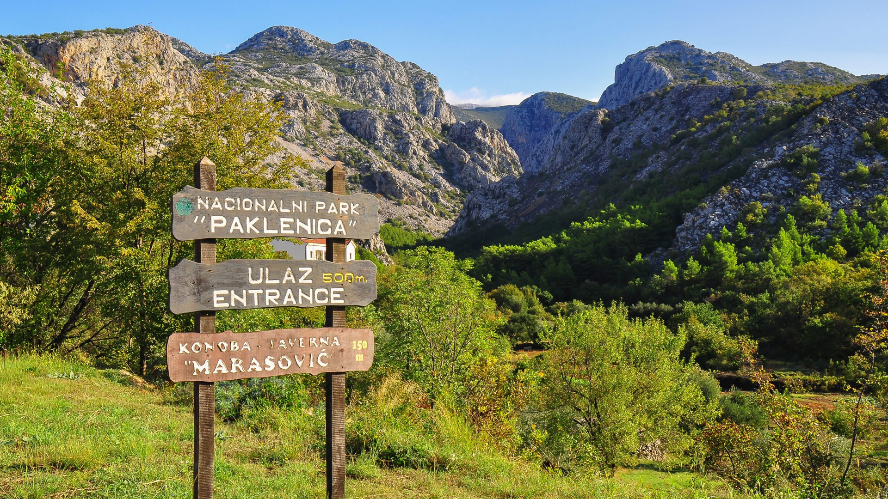
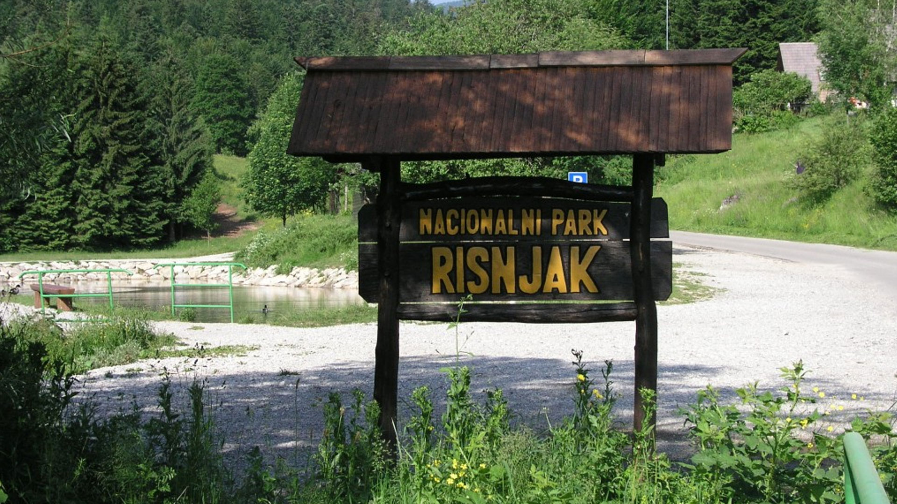
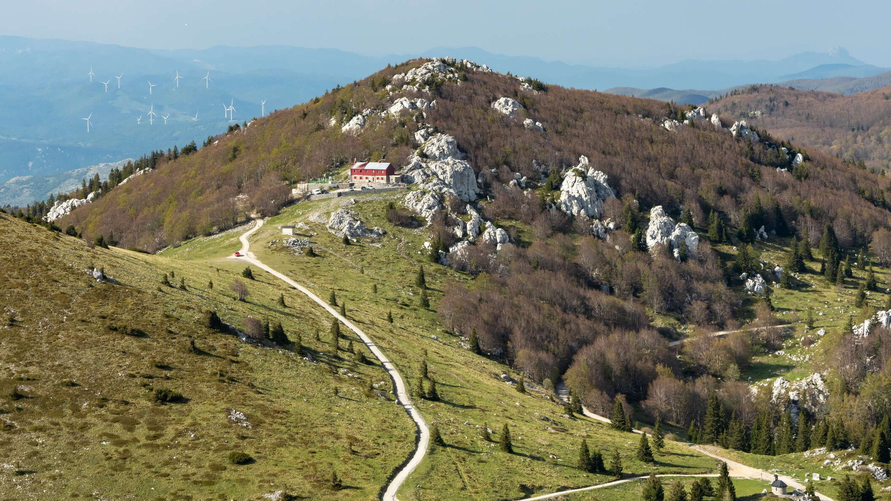
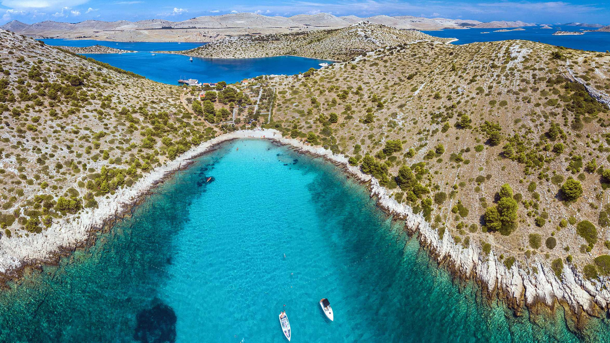
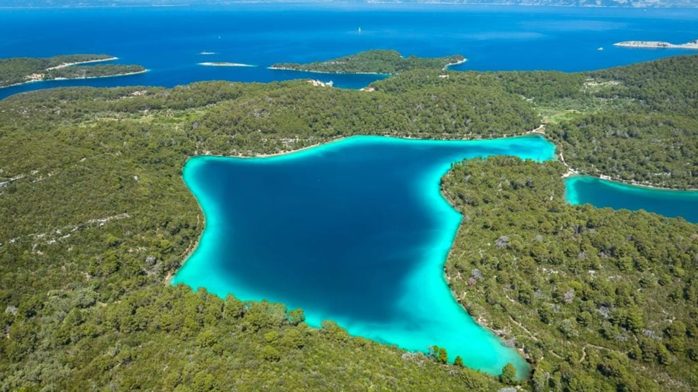

Parkovi

Plitvička jezera
Nacionalni park Plitvička jezera najstariji je i najpoznatiji nacionalni park u Hrvatskoj. Prepoznatljiv je po sustavu međusobno povezanih jezera, sedrenim barijerama i izraženoj prirodnoj dinamici vode koja stalno mijenja krajolik.

Krka
Nacionalni park Krka obuhvaća rijeku Krku i njezin kanjonski tok, u kojem se isprepliću prirodni fenomeni i bogata kulturno-povijesna baština. Park je poznat po skladnom odnosu vode, krša i tradicijskog života uz rijeku.

Paklenica
Nacionalni park Paklenica štiti izrazito vrijedan planinski i krški prostor južnog Velebita. Karakteriziraju ga duboki kanjoni, strme stijene i velika biološka raznolikost na relativno malom području.

Risnjak
Nacionalni park Risnjak nalazi se u srcu Gorskog kotara i obuhvaća šumske i planinske ekosustave visoke prirodne očuvanosti. Park ima važnu ulogu u zaštiti izvora vode i staništa velikih zvijeri.

Sjeverni Velebit
Nacionalni park Sjeverni Velebit ističe se iznimnom raznolikošću krških oblika, planinskih staništa i endemskih biljnih vrsta. Riječ je o jednom od prirodno najočuvanijih planinskih područja u Hrvatskoj.

Brijuni
Nacionalni park Brijuni obuhvaća skupinu otoka koji spajaju mediteransku prirodu s bogatim slojevima povijesne i kulturne baštine. Park je primjer dugotrajnog suživota čovjeka i prirodnog okoliša.

Kornati
Nacionalni park Kornati čini jedinstven otočni arhipelag prepoznatljiv po surovom krškom krajoliku i izrazito razvedenoj obali. Velik dio parka čini more, što ga čini iznimno važnim za očuvanje morskih ekosustava.

Mljet
Nacionalni park Mljet obuhvaća zapadni dio otoka Mljeta, poznat po skladnom spoju šuma, mora i slanih jezera. Park se ističe mirnim prirodnim ambijentom i visokom razinom očuvanosti prostora.